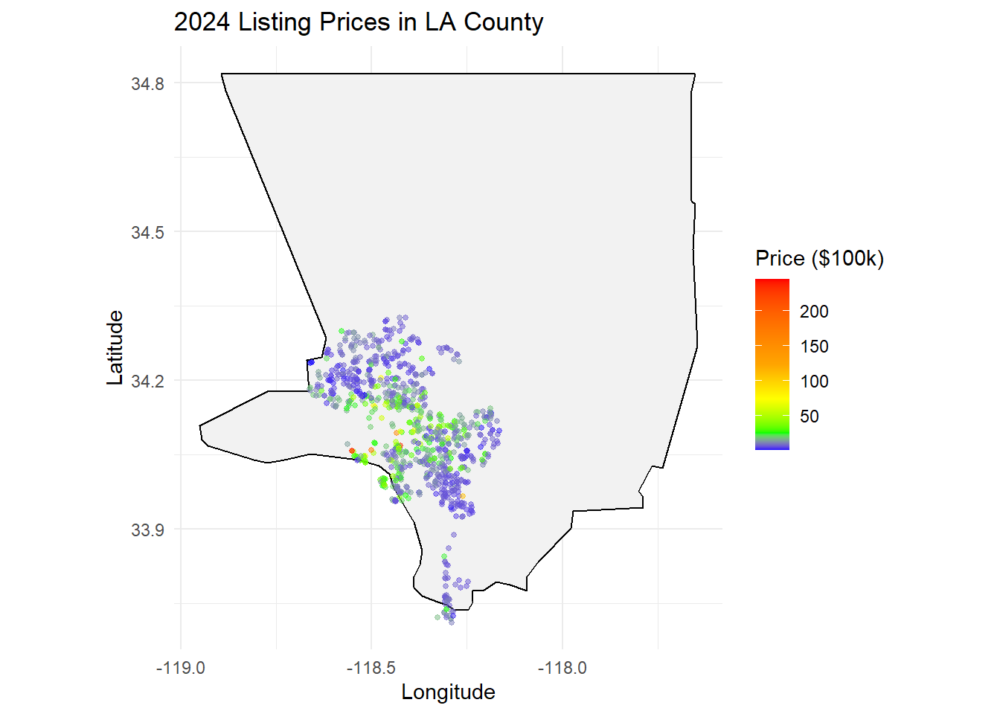
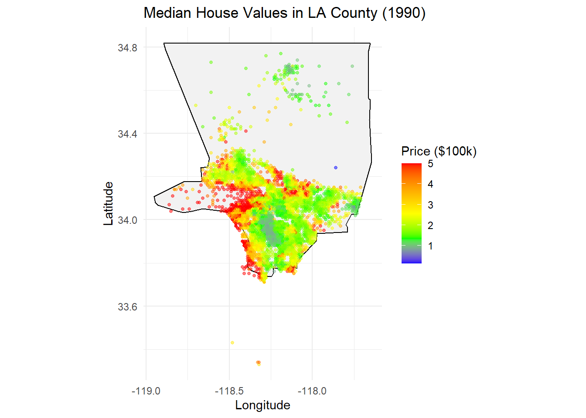
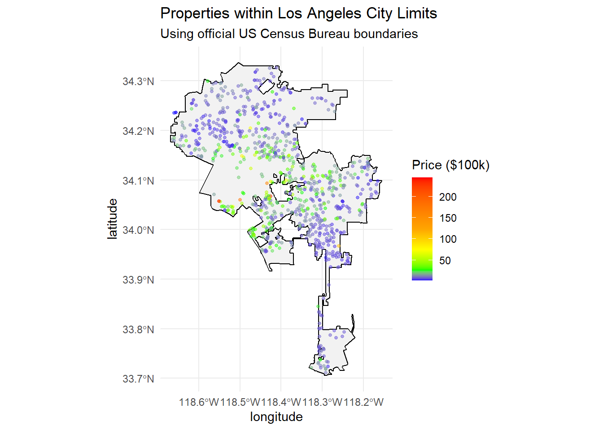
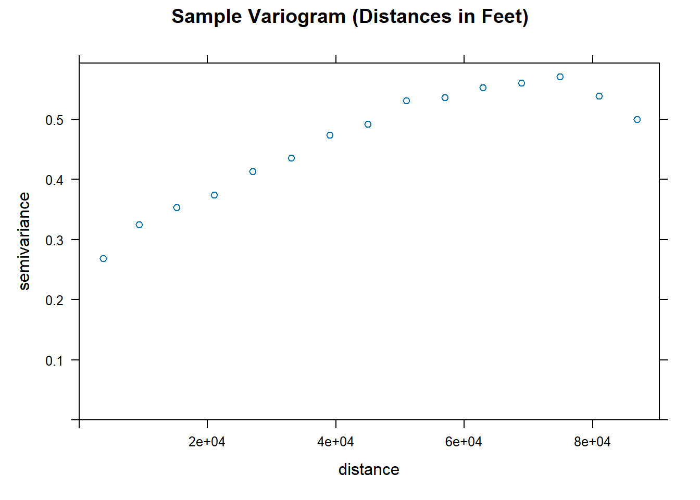
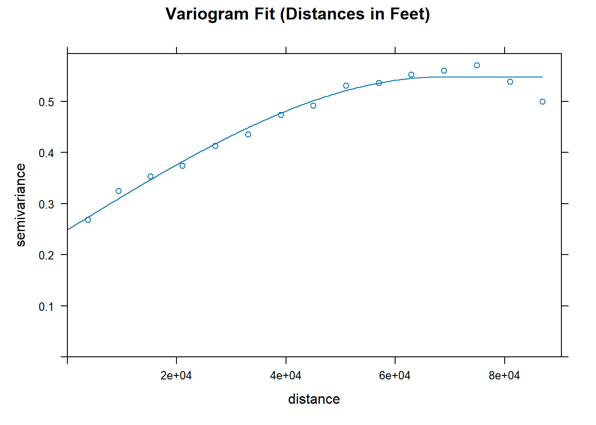
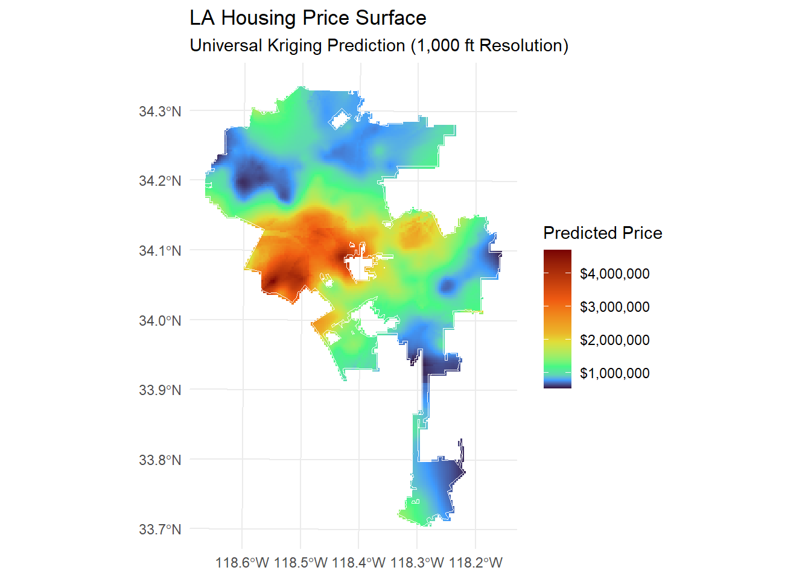
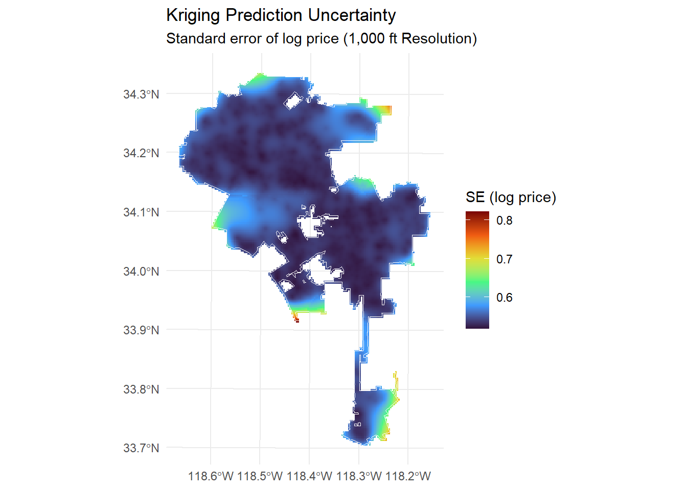
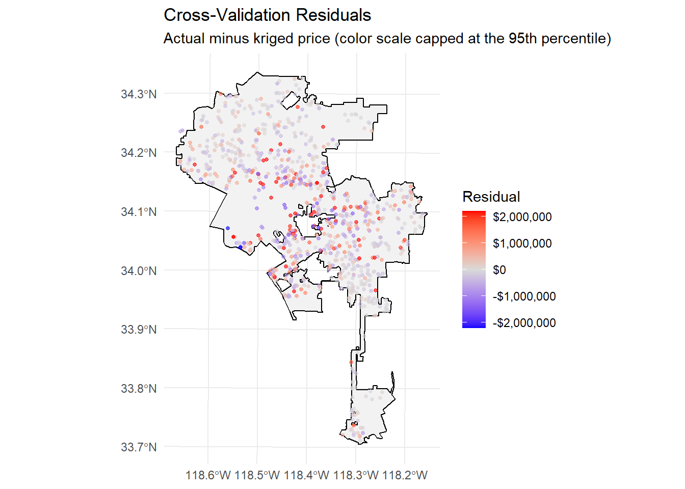
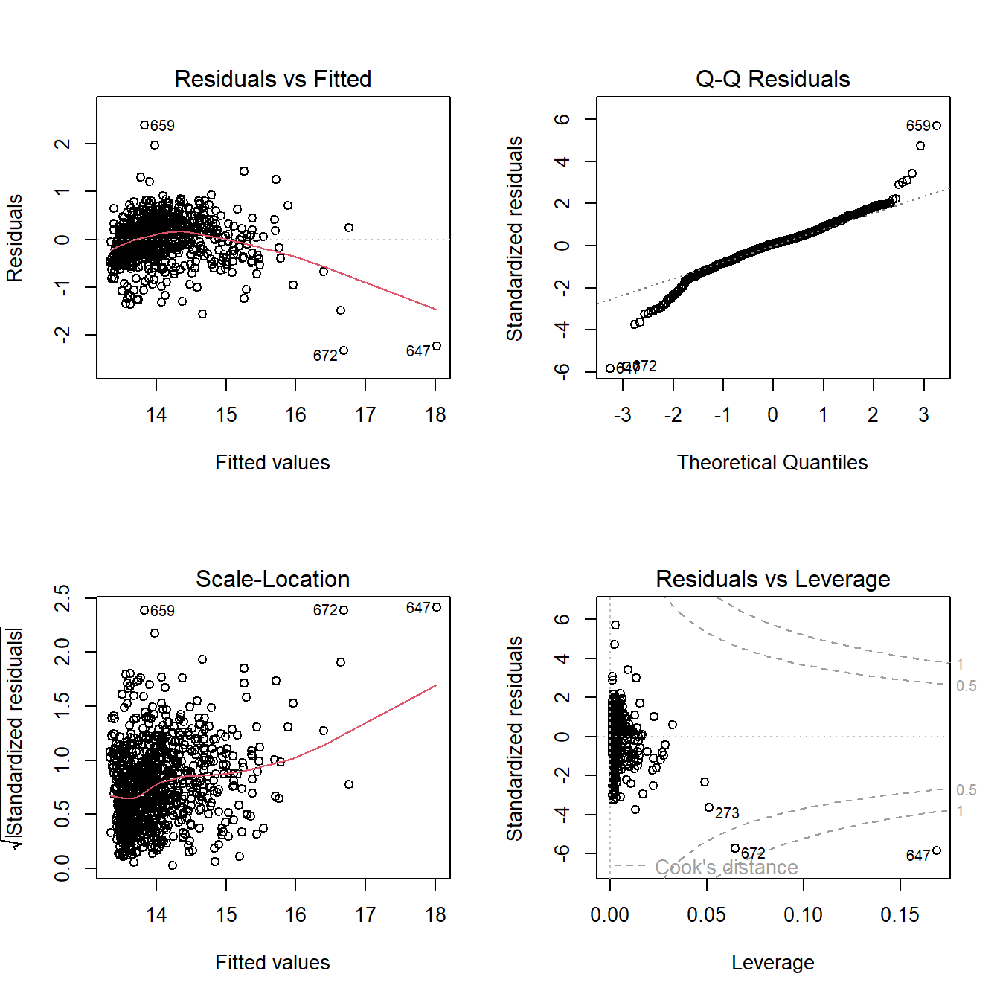

Show code
library(dplyr)
data1990 <- read.csv("housing.csv")
data2024 <- read.csv("LA_Property_Listing.csv") %>% na.omit() %>% filter(price >= 200000)House prices are spatially dependent: homes close to each other tend to sell for similar amounts. This project uses that dependence to estimate a continuous price surface for the City of Los Angeles from a sample of individual property listings, using universal kriging. I then check how well the surface predicts prices it has not seen with leave-one-out cross-validation, and use the kriged estimate as a predictor in a regression on price.
Data
LA_Property_Listing.csv): individual LA property listings with price, living area and coordinates. Listings under $200k are dropped as likely non-standard sales.housing.csv): the California Housing dataset of block-group median house values, clipped to LA County for a historical comparison.tigris).library(dplyr)
data1990 <- read.csv("housing.csv")
data2024 <- read.csv("LA_Property_Listing.csv") %>% na.omit() %>% filter(price >= 200000)The 1990 data covers all of California, so I keep only the block groups that fall inside the LA County boundary.
library(sf)
library(maps)
gdf <- st_as_sf(data1990, coords = c("longitude", "latitude"), crs = 4326)
#download california county shapes
ca_url <- "https://raw.githubusercontent.com/codeforamerica/click_that_hood/master/public/data/california-counties.geojson"
counties <- st_read(ca_url, quiet = TRUE)
#use la only
la_boundary <- counties %>% filter(name == "Los Angeles")
#Filter points that are inside the LA boundary
la_points <- st_intersection(gdf, la_boundary)
data1990 <- la_points %>%
mutate(
longitude = sf::st_coordinates(.)[,1],
latitude = sf::st_coordinates(.)[,2]
) %>%
sf::st_drop_geometry() %>%
relocate(longitude, latitude, .before = 1)Before modeling, it helps to see where the expensive and inexpensive properties are. Both maps use the same color scale, in units of $100k.
library(ggplot2)
data2024$price_scaled <- data2024$price / 100000
counties <- map_data("county")
la_county <- counties %>% filter(region == "california", subregion == "los angeles")
ggplot() +
geom_polygon(data = la_county, aes(x = long, y = lat, group = group),
fill = "gray95", color = "black") +
geom_point(data = data2024, aes(x = longitude, y = latitude, color = price_scaled), alpha = 0.5, size = 1) +
scale_color_gradientn(colors = c("blue", "green", "yellow", "orange", "red"),
name = "Price ($100k)",
values = c(0, 0.1, 0.3, 0.5,1)) +
coord_fixed(1.3) + # Keeps the map from looking "stretched"
theme_minimal() +
labs(title = "2024 Listing Prices in LA County",
x = "Longitude", y = "Latitude")
data1990$price_scaled <- data1990$median_house_value / 100000
ggplot() +
geom_polygon(data = la_county, aes(x = long, y = lat, group = group),
fill = "gray95", color = "black") +
geom_point(data = data1990, aes(x = longitude, y = latitude, color = price_scaled), alpha = 0.5, size = 1) +
scale_color_gradientn(colors = c("blue", "green", "yellow", "orange", "red"),
name = "Price ($100k)") +
coord_fixed(1.3) + # Keeps the map from looking "stretched"
theme_minimal() +
labs(title = "Median House Values in LA County (1990)",
x = "Longitude", y = "Latitude")
The rest of the analysis focuses on the City of Los Angeles, using the Census Bureau’s official city boundary.
library(tigris)
options(tigris_use_cache = TRUE)
ca_places <- places(state = "CA", cb = TRUE, progress_bar = FALSE)
la_city_outline <- ca_places %>%
filter(NAME == "Los Angeles")ggplot() +
# Layer 1: The official City of Los Angeles border
geom_sf(data = la_city_outline, fill = "gray95", color = "black", linewidth = 0.5) +
# Layer 2: Housing data points
geom_point(data = data2024, aes(x = longitude, y = latitude, color = price_scaled), alpha = 0.5, size = 1) +
# Styling
scale_color_gradientn(colors = c("blue", "green", "yellow", "orange", "red"),
name = "Price ($100k)",
values = c(0, 0.1, 0.3, 0.5,1)) +
theme_minimal() +
labs(title = "Properties within Los Angeles City Limits",
subtitle = "Using official US Census Bureau boundaries")
Kriging needs distances in real units, so I project the data from latitude/longitude to the California State Plane Zone V coordinate system (EPSG:2229, in feet).
I model log price rather than price. Prices are strongly right-skewed, and on the log scale a few very expensive properties don’t dominate the fit. Including the x and y coordinates in the formula removes any linear trend across the city, so the variogram describes the spatial dependence that remains after that trend.
library(gstat)
library(terra)
library(tidyterra)
#Convert the city outline and data to a projected coordinate system
#(Kriging works better with meters/feet than Lat/Long degrees)
la_sf <- st_as_sf(data2024, coords = c("longitude", "latitude"), crs = 4326) %>% st_transform(2229)
la_border_proj <- ca_places %>%
filter(NAME == "Los Angeles") %>%
st_transform(2229)coords <- st_coordinates(la_sf)
la_sf <- la_sf %>%
mutate(
x_coord = coords[, "X"],
y_coord = coords[, "Y"]
)
#detrend data
v_sample <- variogram(log(price) ~ x_coord + y_coord, la_sf)
plot(v_sample, main = "Sample Variogram (Distances in Feet)")
The sample variogram measures how different two properties’ (detrended) log prices are, on average, as a function of the distance between them. Semivariance rising with distance means nearby properties are more alike than distant ones. I fit a spherical model, which has three parameters:
v_fit <- fit.variogram(v_sample, model = vgm(model = "Sph", psill = 0.25, range = 50000, nugget = 0.25))
plot(v_sample, v_fit, main = "Variogram Fit (Distances in Feet)")
v_fit model psill range
1 Nug 0.2489957 0.00
2 Sph 0.2987842 68363.77I predict log price on a 1,000 ft grid covering the city. Kriging can’t handle two observations at exactly the same location, so properties sharing coordinates (such as units in the same building) are combined using the geometric mean of their prices. Each prediction uses the 50 nearest listings (nmax = 50) to keep the computation fast.
r_template <- rast(vect(la_border_proj), res = 1000)
grid_points <- as.points(r_template, values = FALSE) %>%
st_as_sf()
grid_coords <- st_coordinates(grid_points)
grid_points <- grid_points %>%
mutate(
x_coord = grid_coords[, "X"],
y_coord = grid_coords[, "Y"]
)
#kriging needs unique locations, so average duplicates
#also reduces the number of points, which makes kriging faster
la_sf_unique <- la_sf %>%
group_by(x_coord, y_coord) %>%
summarize(
price = exp(mean(log(price))), # use geometric mean
.groups = "drop"
)kriged_res <- krige(log(price) ~ x_coord + y_coord,
locations = la_sf_unique,
newdata = grid_points,
model = v_fit,
nmax = 50)The predictions are back-transformed from log price to dollars with exp(). This gives an estimate of the typical (median) price at each location rather than the mean.
prediction_raster <- rasterize(vect(kriged_res), r_template, field = "var1.pred")
final_raster <- exp(mask(prediction_raster, vect(la_border_proj)))
ggplot() +
geom_spatraster(data = final_raster) +
geom_sf(data = la_border_proj, fill = NA, color = "white", linewidth = 0.3) +
scale_fill_viridis_c(option = "H",
labels = scales::dollar,
na.value = "transparent",
values = c(0, 0.1, 0.4, 1)
) +
theme_minimal() +
labs(title = "LA Housing Price Surface",
subtitle = "Universal Kriging Prediction (1,000 ft Resolution)",
fill = "Predicted Price")
Kriging also gives the variance of each prediction. Because the model is on the log scale, I map the standard error of log price. A standard error of 0.3, for example, means the predicted price is uncertain by roughly ±30%. Uncertainty is lowest where listings are dense and grows in areas with few nearby listings.
variation_raster <- rasterize(vect(kriged_res), r_template, field = "var1.var")
se_raster <- sqrt(mask(variation_raster, vect(la_border_proj)))
ggplot() +
geom_spatraster(data = se_raster) +
geom_sf(data = la_border_proj, fill = NA, color = "white", linewidth = 0.3) +
scale_fill_viridis_c(option = "H",
na.value = "transparent") +
theme_minimal() +
labs(title = "Kriging Prediction Uncertainty",
subtitle = "Standard error of log price (1,000 ft Resolution)",
fill = "SE (log price)")
To check the surface honestly, each location is removed in turn, its price is predicted from the remaining listings, and the prediction is compared with the actual price.
cv_results <- krige.cv(
formula = log(price) ~ x_coord + y_coord,
locations = la_sf_unique,
model = v_fit,
nmax = 50 # Keep nmax consistent with the map settings
)coords <- st_coordinates(cv_results)
cv_results <- cv_results %>%
mutate(
x_coord = coords[, "X"],
y_coord = coords[, "Y"]
)
cv_to_join <- cv_results %>%
st_drop_geometry()
la_sf_validated <- la_sf %>%
left_join(cv_to_join, by = c("x_coord", "y_coord"))
la_sf_validated$price_kriged <- exp(la_sf_validated$var1.pred)
# summary of out-of-sample error
cv_summary <- la_sf_validated %>%
st_drop_geometry() %>%
filter(!is.na(residual)) %>%
summarize(
`Properties validated` = n(),
`RMSE (log price)` = sqrt(mean(residual^2)),
`Median absolute % error` = scales::percent(median(abs(price - price_kriged) / price), accuracy = 0.1)
)
knitr::kable(cv_summary, digits = 3)| Properties validated | RMSE (log price) | Median absolute % error |
|---|---|---|
| 888 | 0.532 | 27.3% |
The map below shows each property’s cross-validation residual (actual minus predicted price). The color scale is centered at zero: red properties sold for more than their neighborhood would suggest and blue ones for less. Clusters of the same color would point to local price patterns the model misses.
la_sf_validated$resid_dollars <- la_sf_validated$price - la_sf_validated$price_kriged
# cap the color scale so a few extreme listings don't wash out the map
lim <- quantile(abs(la_sf_validated$resid_dollars), 0.95, na.rm = TRUE)
ggplot() +
geom_sf(data = la_border_proj, fill = "gray95", color = "black", linewidth = 0.5) +
geom_point(data = la_sf_validated, aes(x = x_coord, y = y_coord, color = resid_dollars), alpha = 0.6, size = 1) +
scale_color_gradient2(low = "blue", mid = "gray85", high = "red", midpoint = 0,
limits = c(-lim, lim), oob = scales::squish,
labels = scales::dollar) +
theme_minimal() +
labs(title = "Cross-Validation Residuals",
subtitle = "Actual minus kriged price (color scale capped at the 95th percentile)",
color = "Residual", x = NULL, y = NULL)
Location isn’t the only thing that sets price. Here I regress log price on the kriged (location-based) price estimate and the home’s living area.
model <- lm(log(price) ~ price_kriged + livingArea, data = la_sf_validated)
summary(model)
Call:
lm(formula = log(price) ~ price_kriged + livingArea, data = la_sf_validated)
Residuals:
Min 1Q Median 3Q Max
-2.31844 -0.21893 0.03401 0.22337 2.38650
Coefficients:
Estimate Std. Error t value Pr(>|t|)
(Intercept) 1.288e+01 3.436e-02 374.92 <2e-16 ***
price_kriged 5.180e-07 2.264e-08 22.88 <2e-16 ***
livingArea 1.887e-04 7.726e-06 24.43 <2e-16 ***
---
Signif. codes: 0 '***' 0.001 '**' 0.01 '*' 0.05 '.' 0.1 ' ' 1
Residual standard error: 0.4201 on 885 degrees of freedom
Multiple R-squared: 0.6192, Adjusted R-squared: 0.6184
F-statistic: 719.7 on 2 and 885 DF, p-value: < 2.2e-16par(mfrow = c(2,2))
plot(model)
The diagnostic plots flag two outliers: